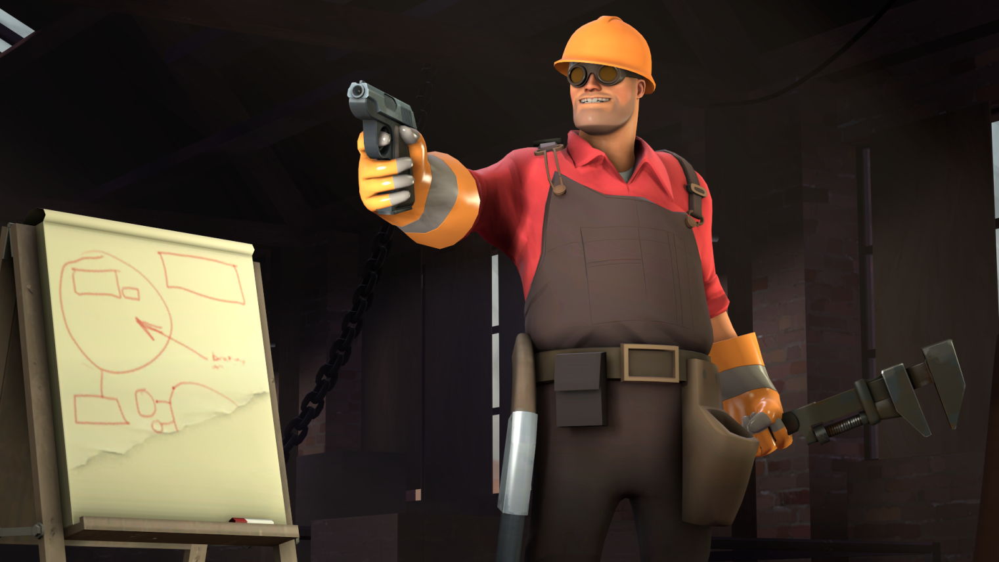
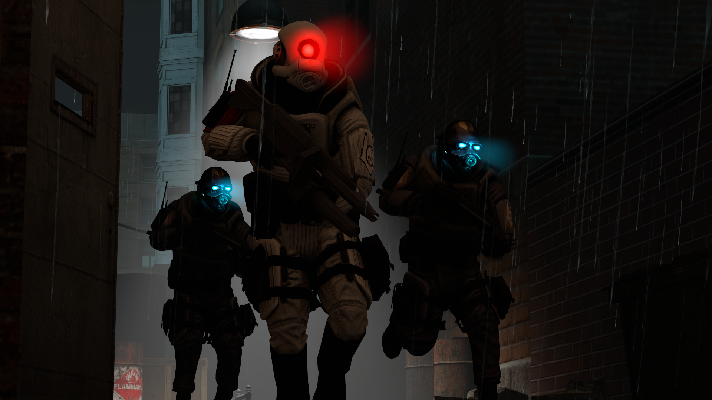

For all of my renders I use Source Filmmaker, a program by VALVe which uses the lighting and code from the Source Engine, which all Source games use. I primarily use it to make scenes focusing on characters or scenes from my favorite games; such as Half-Life or Team Fortress 2. I use Source Filmmaker because I find it the easiest 3D Animation program to learn without previous knowledge, unlike software like Blender.

This render was made as a test to see if I could properly convey the feeling of action and conflict, while still keeping the focus on one to two targets. Elements like shrapnel and debris from the explosion, as well as the crumbling houses in the back, were all trials in making an expressive and tense scene.

This render was a test to see if I could make an image focusing on one character without conflict or interesting scenery. A more simple render, but very helpful for later designs.

This render was made to test particle and lighting systems, as well as a focus on perspective. Almost every object in this image isn't grounded, in fact, not even the ground they're walking on is connected! This is due to issues within the software, but it served as a very helpful lesson.